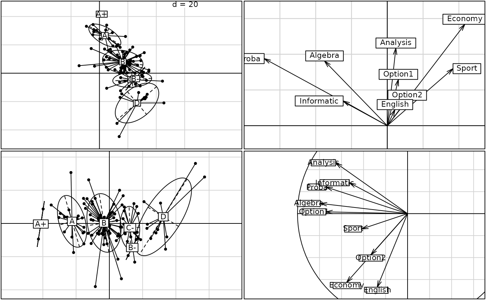
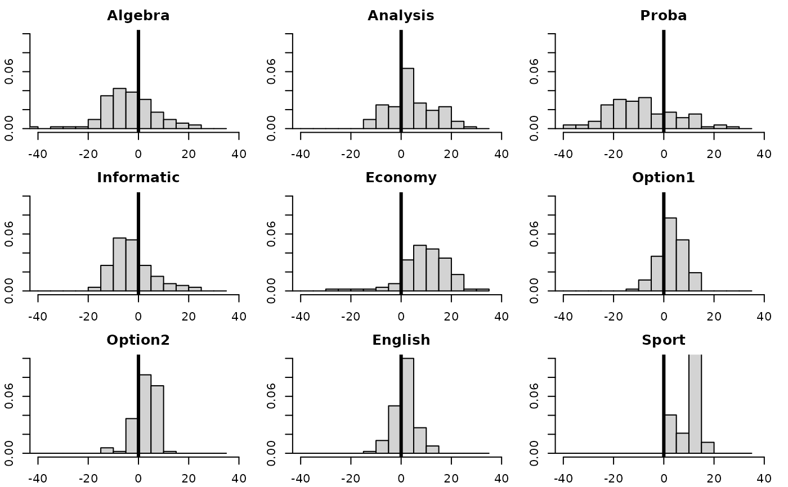

Principal Component Analysis
dudi.pca.Rddudi.pca performs a principal component analysis of a data frame and
returns the results as objects of class pca and dudi.
Arguments
- df
a data frame with n rows (individuals) and p columns (numeric variables)
- row.w
an optional row weights (by default, uniform row weights)
- col.w
an optional column weights (by default, unit column weights)
- center
a logical or numeric value, centring option
if TRUE, centring by the mean
if FALSE no centring
if a numeric vector, its length must be equal to the number of columns of the data frame df and gives the decentring- scale
a logical value indicating whether the column vectors should be normed for the row.w weighting
- scannf
a logical value indicating whether the screeplot should be displayed
- nf
if scannf FALSE, an integer indicating the number of kept axes
Value
Returns a list of classes pca and dudi (see dudi) containing the used information
for computing the principal component analysis :
- tab
the data frame to be analyzed depending of the transformation arguments (center and scale)
- cw
the column weights
- lw
the row weights
- eig
the eigenvalues
- rank
the rank of the analyzed matrice
- nf
the number of kept factors
- c1
the column normed scores i.e. the principal axes
- l1
the row normed scores
- co
the column coordinates
- li
the row coordinates i.e. the principal components
- call
the call function
- cent
the p vector containing the means for variables (Note that if
center = F, the vector contains p 0)- norm
the p vector containing the standard deviations for variables i.e. the root of the sum of squares deviations of the values from their means divided by n (Note that if
norm = F, the vector contains p 1)
Author
Daniel Chessel
Anne-Béatrice Dufour anne-beatrice.dufour@univ-lyon1.fr
Examples
data(deug)
deug.dudi <- dudi.pca(deug$tab, center = deug$cent, scale = FALSE, scan = FALSE)
deug.dudi1 <- dudi.pca(deug$tab, center = TRUE, scale = TRUE, scan = FALSE)
if(adegraphicsLoaded()) {
g1 <- s.class(deug.dudi$li, deug$result, plot = FALSE)
g2 <- s.arrow(deug.dudi$c1, lab = names(deug$tab), plot = FALSE)
g3 <- s.class(deug.dudi1$li, deug$result, plot = FALSE)
g4 <- s.corcircle(deug.dudi1$co, lab = names(deug$tab), full = FALSE, plot = FALSE)
G1 <- rbindADEg(cbindADEg(g1, g2, plot = FALSE), cbindADEg(g3, g4, plot = FALSE), plot = TRUE)
G2 <- s1d.hist(deug.dudi$tab, breaks = seq(-45, 35, by = 5), type = "density", xlim = c(-40, 40),
right = FALSE, ylim = c(0, 0.1), porigin.lwd = 2)
} else {
par(mfrow = c(2, 2))
s.class(deug.dudi$li, deug$result, cpoint = 1)
s.arrow(deug.dudi$c1, lab = names(deug$tab))
s.class(deug.dudi1$li, deug$result, cpoint = 1)
s.corcircle(deug.dudi1$co, lab = names(deug$tab), full = FALSE, box = TRUE)
par(mfrow = c(1, 1))
# for interpretations
par(mfrow = c(3, 3))
par(mar = c(2.1, 2.1, 2.1, 1.1))
for(i in 1:9) {
hist(deug.dudi$tab[,i], xlim = c(-40, 40), breaks = seq(-45, 35, by = 5),
prob = TRUE, right = FALSE, main = names(deug$tab)[i], xlab = "", ylim = c(0, 0.10))
abline(v = 0, lwd = 3)
}
par(mfrow = c(1, 1))
}

